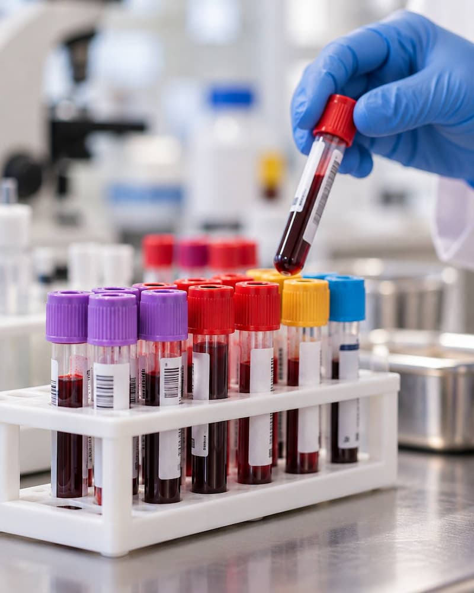
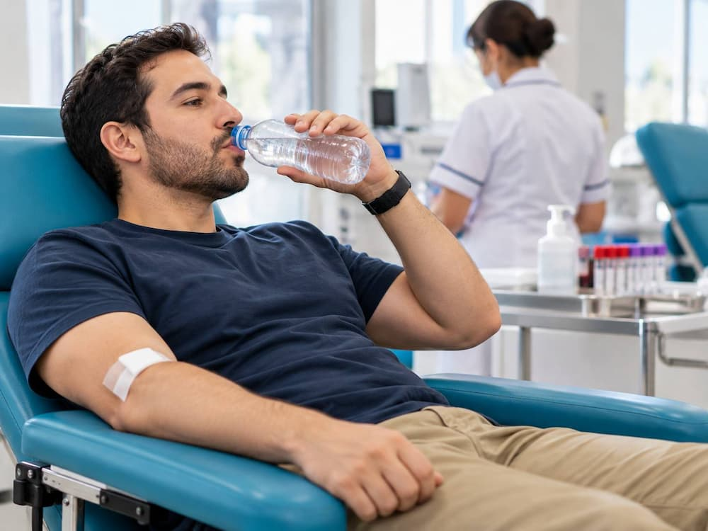
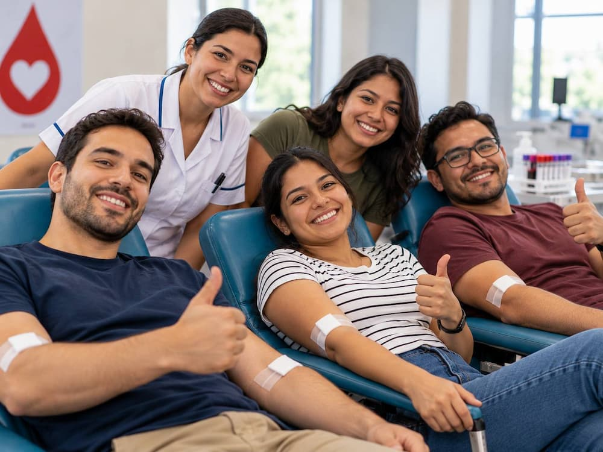

Requisitos para donar sangre
Revisa con calma esta lista antes de ir al banco de sangre. Si cumples con todo, es muy probable que puedas donar y ayudar a quien más lo necesita.
Importante
Esta información es orientativa. Los requisitos pueden variar entre bancos de sangre y la decisión final la toma siempre el personal médico del banco de sangre el día de tu donación.
Requisitos generales
Aplican para todas las personas que quieren donar sangre total.
-
Tener entre 18 y 65 años
Debes ser mayor de edad y no rebasar los 65 años.
-
Identificación oficial vigente
Con fotografía: INE, cédula profesional, cartilla militar, pasaporte o licencia de conducir.
-
Pesar más de 50 kg
Así te aseguras de que la donación no afecte tu salud.
-
Mínimo 6 horas de ayuno
La noche anterior cena algo ligero y sin grasas.
-
Sin tatuajes ni perforaciones recientes
No haberte hecho ninguno en los últimos 12 meses.
-
Sin alcohol ni medicamentos
No haberlos tomado en las últimas 12 horas.
-
Sin vacunas recientes
No haber recibido ninguna vacuna en el último mes.
-
No tener hepatitis B o C
No ser portador de ninguno de estos virus.
-
Sin procedimientos médicos recientes
- Dentales en los últimos 7 días.
- Cirugía mayor en los últimos 6 meses.
- Transfusión en el último año.
Si eres mujer, además…
- No debes estar embarazada.
- No debes estar en periodo de lactancia.
- Deben haber pasado al menos 6 meses desde un parto, una cesárea o una pérdida del embarazo.
Autoexclusión: una decisión responsable
Si crees que tu sangre podría representar un riesgo para quien la reciba, por ejemplo por haber tenido prácticas sexuales de riesgo o por consumo de drogas, te invitamos a no donar.
Es una decisión voluntaria y confidencial: no tienes que dar explicaciones y nadie te juzgará. Cuidar a quien recibe tu sangre también es una forma de ayudar.
¿Cómo es el proceso?
Desde que llegas hasta que te vas pasan alrededor de 3 horas. Esto es lo que ocurre paso a paso.
-
Registro
Presentas tu identificación oficial y llenas tus datos.
-
Signos vitales
Te toman peso, talla, presión arterial y temperatura.
-
Muestra de sangre
Se toma una pequeña muestra para un análisis previo.
-
Valoración médica
Un médico revisa tus resultados y tu historial, define si eres apto y en qué modalidad donarás: sangre total o aféresis.
-
Donación
Se extraen aproximadamente 450 mL de sangre.
-
Refrigerio
Te ofrecen algo de comer y beber para que te recuperes.
-
Comprobante y plática
Recibes tu comprobante de donación y una plática informativa.

Consejos para antes y después
Pequeños detalles que hacen tu donación más cómoda.
Antes de donar
- Duerme bien la noche anterior.
- Cena ligero y sin grasas: evita frituras, lácteos y embutidos.
- Respeta el ayuno mínimo de 6 horas. Puedes tomar agua.
- No tomes alcohol ni medicamentos en las 12 horas previas.
- Lleva tu identificación oficial vigente.
- Usa ropa cómoda, con mangas fáciles de subir.
- Reserva toda la mañana: el proceso dura cerca de 3 horas.
Después de donar
- Toma el refrigerio y bebe muchos líquidos durante el día.
- Deja el vendaje puesto unas horas.
- Evita cargar cosas pesadas con ese brazo y no hagas ejercicio intenso ese día.
- No fumes durante al menos una hora.
- Si te mareas, recuéstate y eleva las piernas.
- Si notas alguna molestia, comunícate con el banco de sangre.


¿Dónde donar?
Puedes donar en cualquier banco de sangre autorizado. Antes de ir, consulta su horario y si necesitas hacer cita.
Directorio oficial
Ejemplos en la Ciudad de México
- Banco de sangre del Hospital General de México Hospital público de la Secretaría de Salud. (se abre en una pestaña nueva)
- Banco de sangre del Hospital Español Hospital privado. (se abre en una pestaña nueva)
Son solo ejemplos: hay bancos de sangre en todo el país. Busca el que te quede más cerca.
Otras formas de ayudar
También puedes buscar el Centro Estatal de la Transfusión Sanguínea de tu estado, que coordina los bancos de sangre de tu localidad.
Recuerda
Esta información es orientativa. Los requisitos pueden variar entre bancos de sangre y la decisión final la toma siempre el personal médico del banco de sangre el día de tu donación.